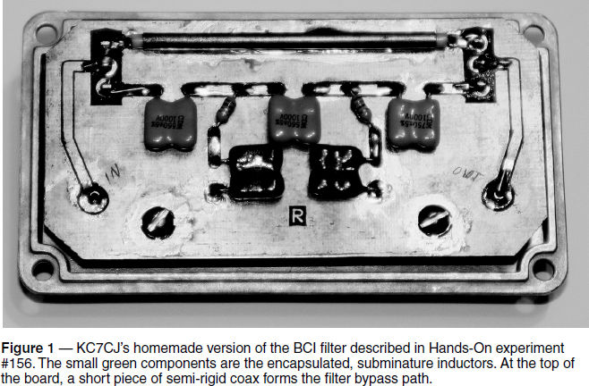
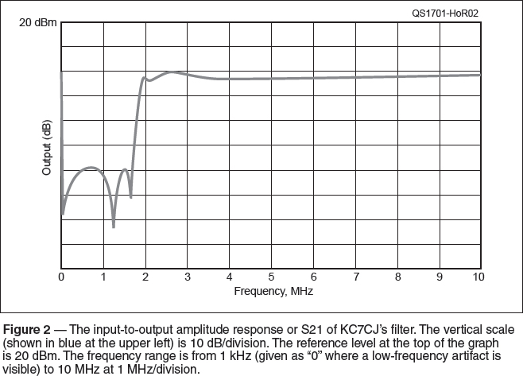
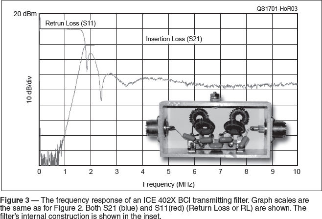

Experiment #168 — Evaluating Filters
A person just learning about radio could be forgiven for thinking radio is mostly just about filters, with the occasional oscillator or modulator tossed in for good measure. Because the filtering function is everywhere, whether analog or digital, we need to know how to describe filters. There are three important parameters that we’ll cover this month — amplitude response, ultimate rejection, and return loss.
Filter Fundamentals
The basics of filters were covered by two earlier Hands-On Radio experiments: #50 and #51, “Filter Design #1 and #2.”1 More information about filters can be found in experiments #87 and #88, which are about using Elsie (filter design software from Tonne Software, www.tonnesoftware.com), and #156, which uses Elsie to design a broadcast interference (BCI) reject filter.
Testing a Real Filter
I got an e-mail from Scott Roleson, KC7CJ, titled “Exp #156 BCI Filter — It works!” Scott built a nice version of the filter (see Figure 1) in a die-cast aluminum box, and made the PCB from scratch. The capacitors are silvered-mica with a 5% tolerance. For the inductors, he used miniature encapsulated components.

I set up my vector network analyzer (VNA) to measure his filter’s input-to-output attenuation from 1 kHz (referred to as “zero” frequency) through 10 MHz. Along with Scott’s version of the Hands-On BCI filter, I also tested a commercial BCI filter from ICE Communications. Both are intended to be used at and above 1.8 MHz, the 160-meter band, where strong local AM BC stations can cause severe receiver overload. Scott’s version is receive-only and uses components rated for low power. The ICE filter is rated for 300 W and can be installed in the output of a regular transceiver.
Ultimate Rejection
Ultimate rejection is the attenuation the filter applies to signals far from the cutoff or rolloff frequency. In Figure 2, you can see there are deep notches in the filter’s stop band. (Compare the as-built filter to the predicted performance in Figure 3 of experiment #156 — an important verification step.) That’s okay — we selected a filter family (Cauer) that obtains a steep rolloff by placing notches at strategic frequencies. But it’s not realistic to give the attenuation of those notches (51, 63, and 58 dB right-to-left) as the filter’s ability to reject AM BC signals. The ultimate rejection of this filter is measured at the maximum of the two peaks in the stop band, 39 dB of attenuation at about 750 kHz. Did this amount of attenuation satisfy the original design specification for 40 dB at 1.6 MHz? There is plenty of attenuation at 1.6 MHz due to the notch placed there, but across the BC band, we just barely missed by about 1 dB. Pretty good, nevertheless.

Insertion Loss
A close look at the filter’s response shows that the shape is very close to what Elsie predicted, right down to the passband ripple between 1.8 and 4 MHz above the filter’s cutoff. Scott’s filter rolls off a little higher than expected, hitting 10 dB of attenuation at 1.8 MHz. Because this is a receive-only filter, that extra 7 dB of attenuation at 1.8 MHz (we only wanted 3 dB) isn’t a serious deficiency, and the filter will work fine. As the response flattens out, we can see there is about 3 dB of attenuation between 4 and 5 MHz. Similarly to how we measure ultimate rejection, this “worst-case” attenuation in the filter’s passband is the filter’s insertion loss value.
In Figure 3, you see a very different filter response (the blue trace). Because this filter is expected to be used at 100 W power levels or higher, insertion loss must be minimized. From the inset photo of the filter components, you can see that full-size toroidal inductors are used. These have far lower resistance, causing less loss than the subminiature inductors used in the receive-only filter that are wound with very fine wire.

The ICE filter’s insertion loss is less than 0.5 dB from about 2.2 through 10 MHz (0.5 dB of loss is the same as 10.9%). The tradeoff, as we discussed in experiment #156, is the steepness at which the response rolls off. While the ICE filter has very good ultimate rejection (70 dB), it doesn’t reach our attenuation spec of 40 dB until 1.25 MHz, which is well inside the BC band. This is a consequence of selecting the different filter family, requiring extra components to construct.
SWR and Return Loss
VNAs and single-port analyzers like the Array Solutions AIM 4170 (array solutions.com), SteppIR SARK-110 (stepper.com), and others measure the S-parameter S11, also called return loss, or RL.2 This parameter is the ratio in dB of how much power is reflected back to the source by the load. (The value of return loss is positive, just attenuation is specified in positive values of dB.)
RL can easily be converted to SWR and vice versa. Higher values of return loss mean less power is reflected and so indicate a lower value of SWR. For example, RL = 6 dB is an SWR of 3:1, 9.5 dB is an SWR of 2:1, 14 dB is an SWR of 1.5:1, and so forth.3
Figure 3 also shows the filter’s RL (S11) as the red trace. Below 1.8 MHz, RL is very low and SWR into the filter is quite high. But just below 1.8 MHz, RL is 10 dB (SWR approx. 2:1) and is greater than 30 dB (SWR = 1.07:1) for 80 meters and higher frequency bands. While RL is not so important for receiving filters, it is obviously quite important for a transmitting filter.
Making Filter Measurements
It would be nice if we all had VNAs, but even though they are more affordable than before, most amateurs use impedance analyzers and antenna analyzers for measuring return loss or SWR. An oscilloscope and signal generator can be used to make measurements of filter response. If you don’t have a signal generator, use a manually-tuned SWR analyzer such as an MFJ-259/269-series unit. Be sure to measure both input and output voltages at each point. Be aware that most filters are designed to be terminated in a specific impedance, such as 50 Ω. Connect the filter to a dummy load when making your measurements, to avoid errors.
Notes
1All previous Hands-On Radio experiments are available to ARRL members at www.arrl.org/hands-on-radio.
2S-parameters are discussed in Hands-On experiment #72.
3A Return Loss — SWR converter is available online at www.microwaves101.com/calculators/872-vswr-calculator.